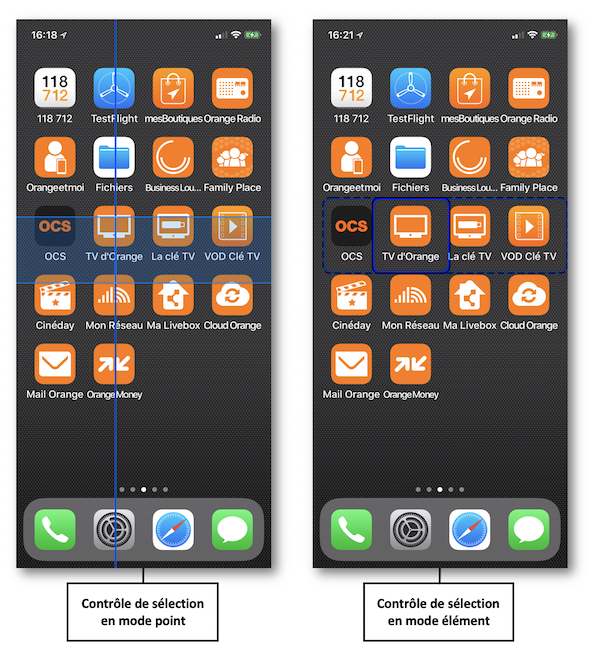

Tester l'accessibilité d'une application iOS
Cette page décrit l'ensemble des tests nécessaires à l'évaluation d'une application iOS dans le cadre de l'accessibilité.
Il est indispensable que TOUS les intervenants du projet connaissent les spécificités d'accessibilité iOS présentées sur ce site de façon à comprendre parfaitement le lien entre les besoins des utilisateurs et leur implémentation au sein de l'application à développer.
Chacune des fonctionnalités doit être vue comme un élément impactant fortement le confort de l'utilisateur, comme une brique essentielle à connotation humaine et pas juste fonctionnelle.
Que ce soit dans la conception, la réalisation ou la vérification, chaque décision se doit d'être particulièrement empathique de façon à fournir la meilleure expérience utilisateur possible.
Pré-requis fondamentaux #
- Consacrer le temps nécessaire à la maîtrise de la gestuelle (VoiceOver, contrôle de sélection).
- Visionner les exemples d'utilisation fournis dans les vidéos WWDC.
- Assimiler les critères de conception pour s'asurer de la bonne voie sur laquelle on s'engage.
- Pour les développeurs, ne pas hésiter à se créer des projets vierges en n'y incorporant que la partie impactant la fonctionnalité désirée afin de s'assurer qu'elle est parfaitement fonctionnelle et que seul l'environnement au sein de laquelle elle va être introduite risque éventuellement d'altérer son comportement.
- Il faut absolument que les contenus web et les éléments tiers qui pourraient être utilisés au sein de l'application soient eux-mêmes déjà parfaitement accessibles.
Environnement de travail #
Quatre grandes familles peuvent être dépeintes au sein de chaque projet :
- À l'initiative de tout ce qui va être créé, la personne en charge de prioriser les fonctionnalités à implémenter doit parfaitement comprendre les besoins utilisateurs et la façon de les décliner sous iOS.
Cette personne doit s'assurer que des critères d'acceptations sont parfaitement définis pour chacune des fonctionnalités et que leur réalisation répond exactement à ce qui était demandé en vérifiant elle-même le fonctionnement souhaité. - L'équipe DESIGN doit réellement se mettre à la place de l'utilisateur de façon à fournir les préconisations les plus précises possibles en fonction des demandes projet en amont.
- L'équipe DÉVELOPPEMENT doit grandement s'appuyer sur les vidéos WWDC et sur le guide pour les développeurs afin de trouver les solutions les plus appropriées aux différentes situations rencontrées.
- L'équipe TEST doit parfaitement maîtriser la gestuelle spécifique et comprendre toutes les possibilités offertes par iOS pour réaliser chacun des tests de façon optimum avant mise en production.
Quel que soit le mode de fonctionnement (SCRUM, ...), les fonctions dévolues à chacune de ces équipes doivent être présentes au sein du projet.
De façon à pouvoir s'assurer que les recommandations d'accessibilité iOS ont bien été prises en compte, deux modes d'évaluation sont à prévoir :
- FONCTIONNEL : on s'assure que l'utilisateur peut naviguer parmi tous les écrans sans soucis, en ayant accès à toute l'information visuelle mise à disposition et surtout sans avoir à se poser de questions. Le parcours utilisateur doit être fluide, simple et sans équivoque.
- TECHNIQUE : on vérifie la conformité technique de certains éléments (contraste des couleurs, taille d'icônes...) tout en pouvant mettre en place des tests liés au code utilisé (TDD, UI). Ce mode vient aussi souvent confirmer et solutionner certains problèmes fonctionnels rencontrés.
Évaluation fonctionnelle #
La participation aux tests de cette partie ne nécessite aucune connaissance technique particulière si ce n'est savoir (dés)activer et utiliser des fonctionnalités d'accessibilité iOS.
En plus des critères de base à respecter, il est primordial de s'assurer que des options d'accessibilité activées par un utilisateur sont parfaitement opérationnelles dans toutes les pages de l'application développée.
Ci-dessous, quelques critères importants à tester impérativement :
- Orientation de l'écran : il est très fortement recommandé de pouvoir utiliser une application en mode portrait ou paysage. Cette fonctionnalité doit absolument être vérifiée pour tous les écrans d'une application.
- Limiter les animations visuelles : lorsque des personnes sont susceptibles d'être plus ou moins gênées par les mouvements visuels, il faut absolument s'assurer que les éventuelles animations proposées répondent bien aux souhaits de l'utilisateur.
- Réduire le floutage et la transparence : victime de problèmes visuels, une personne peut rapidement trouver les effets de flou et de transparence très inconfortables. Il faut donc vérifier que l'atténuation proposée par le système est bien prise en compte sur les pages applicatives où ces effets sont implémentés.
- Mode sombre : le résultat graphique de cette nouvelle fonctionnalité iOS 13 doit absolument être vérifié pour s'assurer que les différents contrastes de couleurs utilisées sont conformes aux critères de conception, sans oublier l'option d'accessibilité augmenter le contraste qui est aussi un élément incontournable à vérifer dans ce contexte.
En plus de ces critères fondamentaux, il y a bien évidemment les incontournables iOS pour qualifer à minima une application d'accessible :
Dynamic Type #
Pour bien comprendre comment le grossissement de texte fonctionne, il est fortement recommandé de visionner l'exemple proposé dans la vidéo WWDC 2017 parfaitement résumée dans la partie WWDC de ce site.
Afin de prendre en compte un panel conséquent de terminaux, il est conseillé de réaliser les tests avec trois terminaux de taille différente (iPhone5SE, iPhoneX et iPhone8Plus par exemple) avec lesquels chaque page devra être visualisée.
Trois types de grossissement doivent être particulièrement étudiés de façon à déterminer le comportement visuel aux extrêmes :
- Seuil le plus bas SANS accessibilité.
- Seuil le plus haut SANS accessibilité.
- Seuil le plus haut AVEC accessibilité.
Enfin, les quelques points suivants sont à examiner minutieusement : - La **troncature '...' est à éviter** pour laisser place à la coupure du mot impacté identifiée par un trait d'union en fin de phrase.
 - **Les illustrations comme les icônes doivent s'adapter au grossissement souhaité** : l'utilisation du [Large Content Viewer](../wwdc/2019/261/) après un appui long, l'implémentation d'un pinch à 2 doigts afin d’éviter à l’utilisateur d’avoir recours à la fonctionnalité `Zoom` ou encore le simple [grossissement d'un élément graphique](../developpement#taille-des-elements-graphiques) peuvent être des solutions selon les cas rencontrés.
- Penser à **modifier le grossissement de texte au sein de chaque écran** pour s’assurer que tous ses éléments répondent parfaitement aux contraintes graphiques mises en place.
- Dès que la **correction d’une anomalie** remontée sur un terminal est effective, elle **doit être vérifiée sur les autres terminaux utilisés en tests** afin de s'assurer que le problème est réellement éradiqué.
- **Les illustrations comme les icônes doivent s'adapter au grossissement souhaité** : l'utilisation du [Large Content Viewer](../wwdc/2019/261/) après un appui long, l'implémentation d'un pinch à 2 doigts afin d’éviter à l’utilisateur d’avoir recours à la fonctionnalité `Zoom` ou encore le simple [grossissement d'un élément graphique](../developpement#taille-des-elements-graphiques) peuvent être des solutions selon les cas rencontrés.
- Penser à **modifier le grossissement de texte au sein de chaque écran** pour s’assurer que tous ses éléments répondent parfaitement aux contraintes graphiques mises en place.
- Dès que la **correction d’une anomalie** remontée sur un terminal est effective, elle **doit être vérifiée sur les autres terminaux utilisés en tests** afin de s'assurer que le problème est réellement éradiqué.
Les tests à réaliser pour le Dynamic Type sont assez longs car plusieurs terminaux sont à étudier et chaque écran est à vérifier avec une modification de la taille du texte à faire pour chacun des écrans.
VoiceOver #
L'activation du lecteur d'écran natif change radicalement les résultats obtenus par les gestes standards effectués sur l’écran tactile, c'est pourquoi son utilisation demande un certain temps d'adaptation pour une maîtrise de sa gestuelle spécifique.
Il est donc très fortement recommandé de connaître au moins les gestes de base avant d'activer cette fonctionnalité à partir des réglages du terminal.
Pour aboutir à une parfaite implémentation de VoiceOver, il ne faut surtout pas croire que chaque élément doit absolument être vocalisé et se contenter de passer au suivant pour renouveler cette opération : ce type de réalisation est tout sauf productif !
Il faut bien avoir à l'esprit que l'information diffusée visuellement est assimilée en très peu de temps alors que celle fournie par le lecteur d'écran arrive de façon séquentielle à la vitesse de sélections successives d'éléments : un effort énorme de mémorisation est à fournir pour avoir une vision synoptique de l'écran et comprendre réellement ce qui est proposé.
Pour mieux comprendre cette situation, il est recommandé de passer son écran en mode "rideau" puis naviguer comme si on voyait l'écran.
Cette opération est particulièrement utile lors de premiers tests sur une application qu'on découvre car on n'est pas influencé sur le parcours utilisateur qui serait déjà visionné inconsciemment.
En plus des critères de conception à respecter, quatre grands principes doivent rester à l'esprit lors de tests :
- L'information visuelle doit être retranscrite vocalement.
- L'utilisateur doit toujours savoir où il est et où il peut aller.
- L'utilisateur ne doit pas se poser de questions, sa navigation doit se faire sans équivoque.
- L'utilisateur doit réaliser un minimum de sélections au sein de l'écran.
Ici encore, les tests demandent beaucoup de temps et requièrent une forte empathie pour avancer des critiques constructives sur la façon dont l'information vocale doit être diffusée par VoiceOver.
Maintenant, si le lecteur d'écran n'est pas encore implémenté sur une application déjà en diffusion publique, il est primordial d'en informer l'utilisateur dès sélection de l'icône applicatif en indiquant très clairement la situation de façon à en éviter une consultation catastrophique et décevante.
Contrôle de sélection #
L'utilisation du contrôle de sélection s'articule autour du mode point et du mode élément.

La sélection des éléments avec le mode élément fonctionne globalement bien quand les éléments proposés sont natifs et que l'application n'est pas trop compliquée graphiquement.
Il peut très bien arriver que ce mode de sélection ne suive pas la logique souhaitée et ne propose pas les éléments dans l'ordre désiré.
Dans ce cas, les tests réalisés devront donc remonter toute amélioration nécessaire pour aboutir à la meilleure expérience utilisateur possible.
Remarque : l'activation de cette fonctionnalité se fait elle aussi via les réglages du terminal.
Évaluation technique #
Comme son nom l'indique, cette partie requiert des connaissances plus ou moins pointues selon ce que l'on souhaite vérifer.
Contraste des couleurs #
Graphiquement, ce point est très certainement le plus facilement vérifiable grâce à certains logiciels à installer en local (Colour Contrast Analyzer...) ou à des sites web publics (WebAIM...).
L'outil Accessibility Inspector dispose d'une fonctionnalité Color Contrast Calculator depuis Xcode 11 qui permet aussi de réaliser le même type de vérifications.
Inspection de code #
L'interface de développement Apple (Xcode) fournit un outil particulièrement intéressant intitulé Accessibility Inspector.
L'intérêt et l'utilisation de cet outil ne seront pas développés ici car ils sont très bien expliqués dans les vidéos parfaitement détaillées Audit d'une app en accessibilité et Découvrir Accessibility Inspector dont le visionnage est très fortement recommandé.
Tests liés au code #
De façon à assurer une stabilité temporelle au niveau du code, des tests unitaires (TDD) et graphiques (UI) sont à mettre en place par les développeurs.
Ces bonnes pratiques permettent de garantir une pérennité fonctionnelle en étant informé d'un éventuel écart introduit lors de développements ultérieurs.